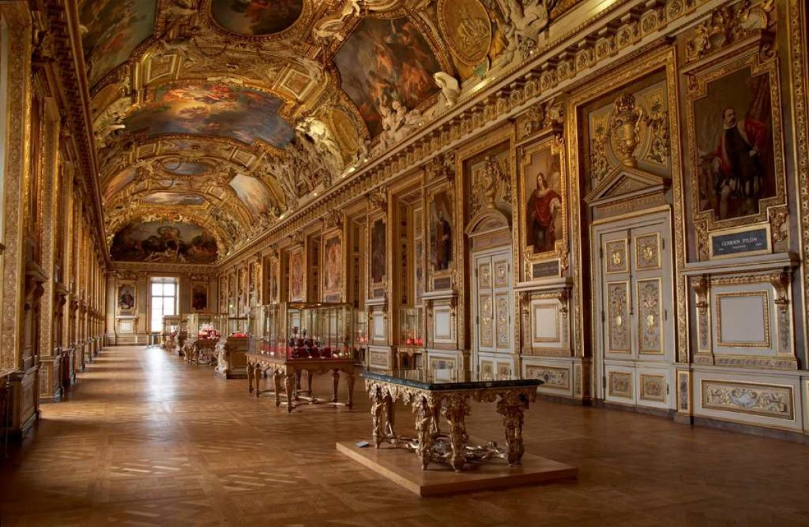

MUSEUM LOUVRE: MUSEUM SENI TERBESAR DI DUNIA
Oleh: Azzirah Syaharani (11210251000043)

Salah satu museum yang terkenal di Kota Paris adalah Musee du Louvre atau Museum Louvre yang merupakan museum seni dan monumen sejarah terbesar di dunia. Di Paris, Prancis, Museum Louvre menjadi destinasi wisata yang banyak diminati wisatawan selain Menara Eiffel. Pada tahun 2018, museum ini menerima predikat world’s most visited art museum
yang dikunjungi lebih dari sepuluh juta orang. Maka tidak berlebihan jika Museum Louvre ini disebut sebagai daya tarik lain kota Paris selain menara Eiffel.
Museum ini menyimpan puluhan ribu karya seni, salah satunya lukisan karya Leonardo Da Vinci, Mona Lisa
. Daya Tarik Museum Louvre terletak pada dua bangunan ikoniknya, yaitu Piramida Louvre dan Piramida Terbalik (Inverted Pyramid atau La Pyramide Inversee). Piramida Louvre terbuat dari kaca, dibangun oleh arsitek terkenal asal New York I.M. Pei pada 1989 dan merupakan pintu utama untuk masuk ke dalam Museum Louvre.
Sejarah Museum Louvre
louvre.fr melansir, Museum Louvre tidak serta-merta menjadi sebuah museum. Louvre mengalami tahapan sejarah sebelum ditetapkan menjadi Museum, ada fakta menarik tentang sejarah Museum Louvre. awalnya merupakan sebuah benteng. Pembangunan Louvre dimulai pada akhir abad ke-12, saat Raja Philippe Auguste (Phillippe II) memutuskan untuk membangun benteng di perbatasan Paris, sepanjang sungai Seine untuk melindungi Kota Paris, saat ia bersiap untuk pergi berperang dalam Perang Salib. Bangunan yang dirancang oleh para insinyur kerajaan ini berbentuk bujur sangkar, dilindungi oleh parit, dan dilengkapi dengan menara pertahanan melingkar di sudut-sudutnya dan di tengah-tengah sisinya. Di tengah halamannya berdiri sebuah menara utama yang memiliki parit tersendiri. Benteng ini juga memiliki ruang tahanan untuk menawan musuh yang berbahaya.
perang selama ratusan tahun, Louvre tidak lagi dipergunakan. Hingga 1527, Raja Francis I memerintahkan untuk membongkar bangunan asli benteng Louvre dan menggantinya dengan bangunan bergaya Renaisans sebagai tempat tinggalnya. Raja Francis I merupakan sastrawan yang mencintai karya seni sehingga banyak koleksi karya seninya yang disimpan dalam Louvre. Raja Francis I juga merupakan teman dekat dari Leonardo Da Vinci.
Saat pembangunan Istana Versailles selesai, kerajaan Perancis memindahkan basis Istana dari Paris dan Louvre, sehingga pembangunan Louvre dihentikan dan bangunan tersebut ditinggalkan begitu saja. Louvre dijadikan rumah bagi sekelompok seniman, di antaranya pelukis, penyair dan pematung. Setelah lebih dari seabad terabaikan, pembangunan Louvre dilanjutkan dan setelah kejatuhan monarki pada tahun 1789, Louvre dikembalikan kepada pemerintahan Perancis. Museum Louvre dibuka untuk umum pada tanggal 10 Agustus 1793, dengan memamerkan lebih dari 500 lukisan dan seni dekoratif, yang banyak di antaranya merupakan sitaan dari keluarga kerajaan dan bangsawan Perancis.
karya Leonardo Da Vinci memang merupakan koleksi dari Raja Francis I. Setelah kematian sang seniman, Raja membeli lukisan Mona Lisa
dari asistennya, tapi tidak menaruhnya di Louvre. Lukisan tersebut berpindah-pindah dari istana satu ke istana lainnya. Baru pada saat Museum Louvre dibuka, lukisan Mona Lisa
disimpan dalam Museum Louvre. Tahun 1911, Lukisan Mona Lisa dicuri dari dalam museum oleh seorang penjahat Italia yang mengklaim tindakannya tersebut adalah untuk mengembalikan Mona Lisa ke tanah asli kelahiran pelukisnya, Da Vinci. Selama 2 tahun lukisan tersebut menghilang sampai akhirnya ditemukan saat salah satu pencuri berusaha menjual lukisan tersebut. Hingga kini, lukisan Mona Lisa masih di pajang di Museum Louvre.
Fakta Menarik Tentang Museum Louvre
Louvre berbentuk U terbagi menjadi 3 sayap dan 4 lantai, bersama-sama membentuk labirin galeri, yang masing-masing menawarkan kenikmatan tersendiri bagi mata. Denon Wing menampung Mona Lisa yang tidak boleh dilewatkan dan karya terkenal Italia lainnya. Ini juga merupakan rumah bagi lukisan Prancis terkenal, termasuk Liberty Leading the People dan The Coronation of Napoleon , serta beberapa patung terkenal.
Sully Wing memamerkan contoh pahatan yang luar biasa, termasuk Venus de Milo , dan koleksi barang antik Mesir yang kaya. Ada juga sisa-sisa Louvre abad pertengahan. Richelieu Wing akan mengejutkan Anda dengan apartemen mewah Napoleon III, halaman Cour Marly beratap kaca yang indah, dan karya seni Belanda yang terkenal. Mengunjungi Louvre juga berarti menemukan pemandangan Paris yang indah. Dari ratusan jendela, Anda dapat melihat Sungai Seine, Pont Neuf, Rue de Rivoli pemandangan yang cocok untuk para raja yang pernah menikmatinya.
Louvre terletak dekat dengan stasiun metro Palais Royal Musée du Louvre. Bus wisata Paris, layanan perahu sungai, dan banyak bus kota juga berhenti di Louvre. Museum ini memiliki beberapa pintu masuk, dan pintu masuk piramida kaca di tengah Louvre adalah yang paling ramai. Hemat waktu Anda dengan membeli tiket terlebih dahulu secara online atau di toko FNAC. Selain itu, ada baiknya mencoba pintu masuk di 99 Rue du Rivoli, atau Quai Francois Mitterand karena cenderung lebih sepi.
Dengan begitu banyak hal yang bisa dilihat, yang terbaik adalah merencanakan apa yang ingin Anda lihat atau, lebih baik lagi, ikuti tur berpemandu dengan pakar seni. Untuk sesuatu yang sedikit berbeda, jelajahi Louvre pada malam hari saat museum tutup pada hari Rabu atau Jumat. Anda akan dapat mengagumi mahakarya dunia dengan lebih sedikit orang di sekitarnya dan menikmati suasana unik eksterior museum yang terang.
Info Museum Louvre
Lokasi: Rue de Rivoli, 75001 Paris, Prancis
Buka: Senin, Kamis, Sabtu dan Minggu mulai jam 9 pagi. sampai jam 6 sore, Rabu dan Jumat dari jam 9 pagi sampai 9.45 malam (tutup pada hari Selasa)
Telepon: +33 (0)1 40 20 50 50
Website: louvre.fr
Sosial Media: museelouvre